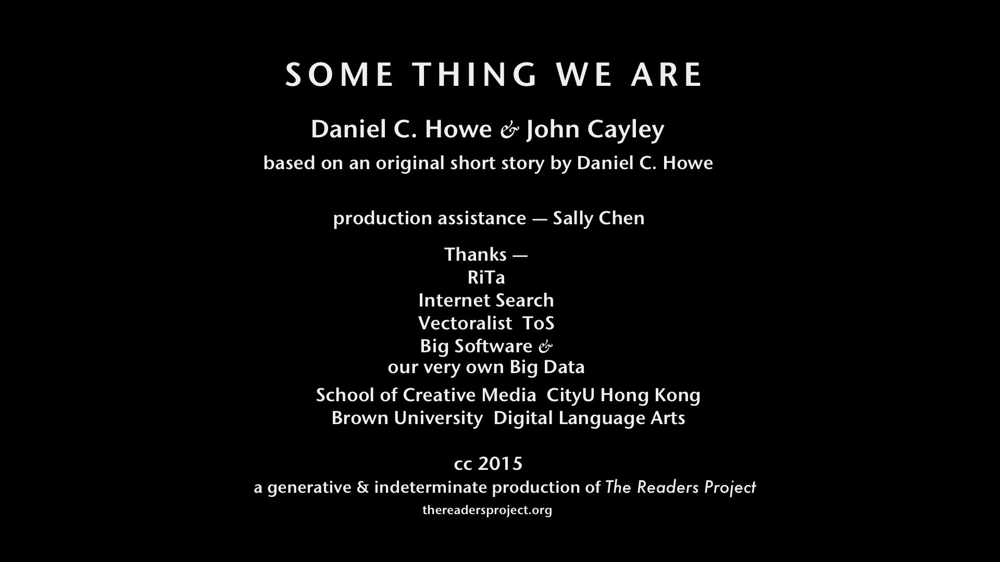

generated movies based on an original short story by Daniel C. Howe
mixed media networked installation, custom software
included in the NEW TEXT exhibition at ISEA 2015
Founded on its earlier installation, 'Read For Us,' The Readers Project presents the work of a software entity that generates digital video montage, with visual content sourced through live image search. The Montage Reader — developed initially for English — analyses its text and first establishes a overall visual grammar based on closed-class words that underlie linguistic structure. The reader then searches for images using phrases — 'longest common phrases' whenever possible — finally composing a sequence of images that corresponds with the written language of the text it is reading both structurally and semantically — at least in so far as contemporary image search proposes relations that are meaningful for the human user-readers of network services and their aggregation of crowd-sourced indexing. This version of the Montage Reader was developed to read 'Some Thing We Are,' a short story by Daniel C. Howe.
Still photograph showing the main display and the iPad installed with its live-networked interface — 'Some Thing We Are,' ISEA 2015, New Text
The following images are screen captures from the project's interface as developed for a real-time networked iPad that was installed in the gallery. The iPad displayed a selection of images from live Google image search. For each search on a phrase from the short story, one of these images was algorithmically and quasi-randomly chosen for the movie montage, as shown on the main display. The bottom register of the iPad contained an actual control interface allowing visitors to pause and navigate the movie; choose a color-cast filter for the overall movie (e.g. 'rose' or 'amber'); select a semantic keyword 'determinative' for all the images searches; and, finally, to 'Generate' (restart) a movie with the selected parameters.
'NEW TEXT' was held at the Goldcorp Centre for the Arts, Simon Fraser University, Vancouver, Canada, August 14-19, and was curated by Dene Grigar for ISEA 2015.
See below for other credits.
